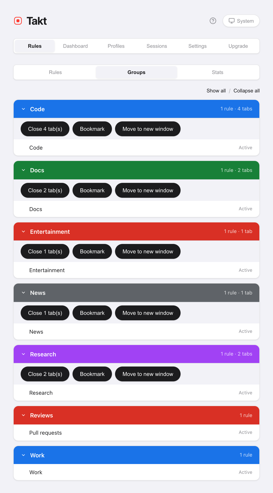

Short answer: Takt puts every bulk tab action in one popup and behind three default shortcuts. Alt+Shift+G groups, Alt+Shift+U ungroups, Alt+Shift+C collapses.
- Free: Group, Ungroup, Collapse, Expand, Close Duplicates, Sort by Domain (current window), the Tabs pane.
- Premium: close, bookmark or move a whole group, sort every window, collapse other windows, an "Others" group for leftovers.
- Everything runs on your machine. No account.
What does each cleanup button do?
The Home pane of the popup has a Quick actions block. Group, Ungroup, Collapse, Expand and Close Duplicates turn grey when they would do nothing, so the block also shows the state of your tabs.

| Button | What it does | Scope | Plan |
|---|---|---|---|
| Group Tabs | Files tabs into groups by your rules, by category or with AI | All windows | Free |
| Ungroup All | Removes every group, keeps every tab | All windows | Free |
| Collapse All | Folds every group to its label | All windows | Free |
| Expand All | Opens every group | Current window | Free |
| Close Duplicates | Closes repeated URLs, keeps the first copy | Current window | Free |
| Sort by Domain | Puts tabs from the same site side by side | Current window (Free), every window (Premium) | Free / Premium |
Group Tabs follows the grouping mode picked above it. In Category and AI modes the free plan creates up to 5 groups per run. Learn more in grouping with rules and grouping by category or AI.
How do I tidy a messy window in four clicks?
- Close Duplicates. Repeated tabs in this window close. The leftmost copy stays. Doing this first means you never group the copies.
- Group Tabs. Every tab that matches lands in its group.
- Sort by Domain. Inside each group, and among ungrouped tabs, same-site tabs line up. Sorting never moves a tab into or out of a group.
- Collapse All. Every group folds down to its colored label.
Close Duplicates treats two URLs as the same according to your URL matching setting. The default ignores the #fragment, a leading www., a trailing slash and the order of query parameters.
What are the keyboard shortcuts?
| Shortcut | Action | Plan |
|---|---|---|
| Alt+Shift+G | Group all tabs | Free |
| Alt+Shift+U | Ungroup all tabs | Free |
| Alt+Shift+C | Collapse all groups | Free |
| Alt+Shift+Space | Quick Switch: search and jump to any tab | Premium |
| None by default | Expand all groups | Free |
Chrome lets an extension suggest at most four shortcuts, so Expand All ships without one. Give it a key at chrome://extensions/shortcuts. You can rebind the other four there too.
How do I see every open tab in one list?
Open the Tabs pane in the popup. It lists the tabs of every window under their group names, A to Z, with ungrouped tabs last. Type to filter by title or URL. Click a tab to jump to it. This pane is free.
Can I close, bookmark or move a whole group?
Yes, with Premium. Three actions work on a group as a unit:
- Close. Closes the group's tabs. Pinned tabs stay open. The Groups view asks you to confirm first.
- Bookmark. Saves the group into a "Takt Bookmarks" folder. Tabs stay open. Needs the optional Bookmarks permission.
- Move to new window. Keeps the group's name, color and collapsed state.
Find them in Options → Rules → Groups, or right-click a page and open Group actions. The right-click menu can also move the group to another window you already have open.

Can groups collapse on their own?
Three ways, all off until you turn them on:
- Per rule. Tick Auto-collapse group in the rule editor. A new group from that rule starts folded, unless it holds the tab you're looking at. Free.
- In the same window. Settings → Tab Groups → Auto-collapse other groups on expand. Open one group and the others in that window fold. Free.
- Across windows. Auto-collapse groups in other windows when switching focus. Switch windows and, after 300 ms, the groups in every other window fold. Premium.

What happens to tabs no rule matches?
They stay ungrouped. With Premium, turn on Others catch-all group and Group Tabs collects every leftover tab into a grey "Others" group. Pinned tabs and chrome:// pages are left alone. Running Group Tabs again reuses the same Others group. It applies in Rules mode.
What these buttons don't do
- Sort by Domain is a one-off. New tabs aren't kept sorted. It also compares the last two parts of a hostname, so
example.co.uksorts asco.uk. - Close Duplicates stays in one window. A copy open in another window isn't touched.
- Group actions live on the page menu. Right-click the page, not the tab strip.
- Group Tabs needs something to group by. In Rules mode, tabs no rule matches stay loose unless Others is on.
Two clicks from loose tabs to a tidy row of groups.
Add Takt to Chrome, freeFAQ
What are Takt's default keyboard shortcuts?
Alt+Shift+G groups, Alt+Shift+U ungroups, Alt+Shift+C collapses, and Alt+Shift+Space opens Quick Switch (Premium). Expand All has no default key. Assign one at chrome://extensions/shortcuts.
Which tab does Close Duplicates keep?
The first copy in tab-strip order, leftmost first. Later copies in the current window close. Your URL matching setting decides what counts as the same URL; by default the #fragment is ignored.
Are the cleanup buttons free?
Group, Ungroup, Collapse, Expand, Close Duplicates, the Tabs pane and same-window auto-collapse are free. Sort by Domain is free for the current window. Premium ($3/month or $30/year) adds sorting every window, group actions, cross-window auto-collapse and the Others group.
Can I close a whole tab group at once?
With Premium, yes: from the Groups view in Takt's options, or from Group actions in the page's right-click menu. Close skips pinned tabs, and the Groups view asks you to confirm first.